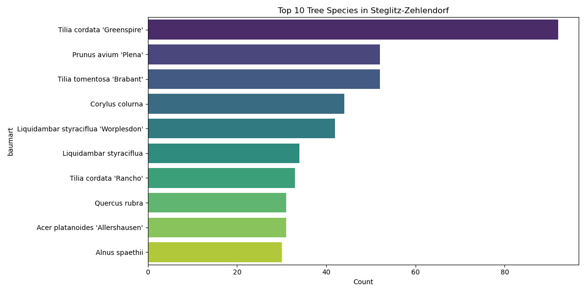
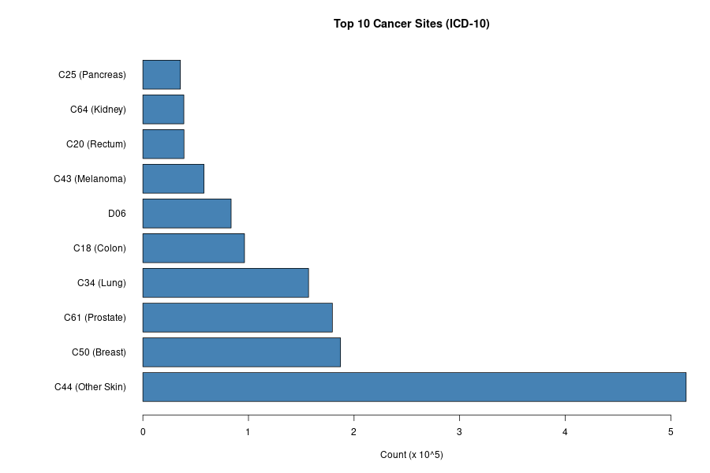

Highlighted Projects
Hepatitis Delta Virus Nextflow Pipeline
Developed a robust, reproducible NGS pipeline in Nextflow DSL2 utilizing Conda for dependency management, MAFFT for sequence alignment, and trimAl for noise reduction.
Introduction to Tidymodels Ecosystem
Created a comprehensive machine learning curriculum transitioning from caret to Tidymodels, utilizing recipes for robust pre-processing and parsnip for unified model interfaces.

Berlin's New Growth
An analysis of recent tree plantings (2020-2025) in Steglitz-Zehlendorf, focusing on species selection for climate resilience.
View Analysis →
Simulacrum Data Analysis
A biostatistical analysis of synthetic cancer data (Simulacrum v2.1.0), exploring patient demographics, tumour sites, and staging using Python.
Biogeochemical Climate Model
Developed and implemented a novel Cyanobacteria Life Cycle (CLC) model within the ERGOM framework to perform hind cast and projection studies for future climate warming scenarios.
View on GitHub →Particle Collision & Fragmentation Model
Developed an astrochemical molecular model using particle accelerator data to predict chemical reactions in space.
Marine Ecosystem Simulation
Created a simulation of plankton population dynamics in response to changing environmental factors, applying statistical methods to validate the model against observational data.
Git-Spaced Flashcards
A spaced repetition learning app, like Anki, that stores its data in your GitHub repository and includes AI-powered features.
View on GitHub →PCA Interactive Demo
An interactive HTML/JavaScript demonstration of Principal Component Analysis. Serving as a showcase piece for understanding and teaching core machine learning concepts through visualization.
Clinical Cancer Data Extraction
Extraction and analysis of NHS cancer clinical records. Developed reproducible pipelines directly relevant to clinical bioinformatics and patient outcome modeling.
Command-Line AI Tutor
A command-line Python tutor leveraging AI to interactively teach programming concepts in the terminal. Demonstrates initiative, algorithmic thinking, and teaching capability.
Vim German Tutor
A creative and memorable terminal-based tutor for learning German vocabulary inside the Vim editor. Showcases personality, hacking skills, and technical creativity.